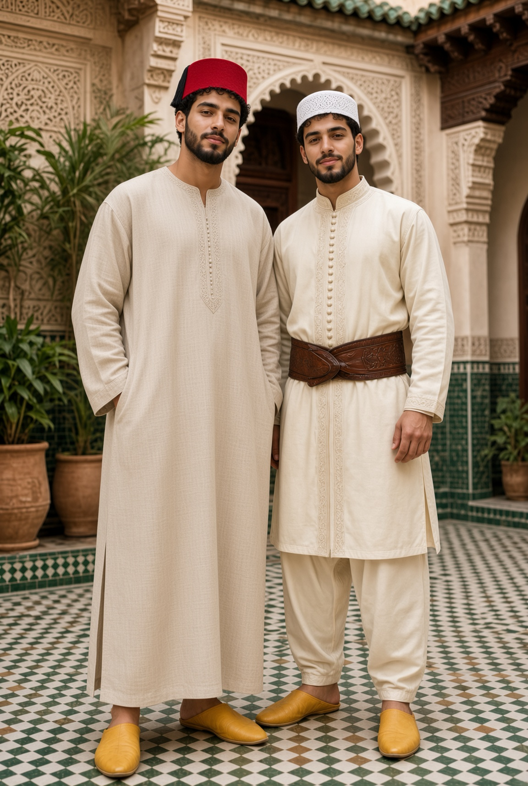

Le vêtement de l'homme
لباس الرجل
Formes, matières et noms de l'habit masculin marocain — et les lignes du Mashreq, du Golfe, de l'Empire ottoman et de la Perse.

DANS LA MAISON
Une manière de porter, pas un uniforme

Dans la vie quotidienne du Riad — repas, prière, causeries, travail aux ateliers — le vêtement traditionnel est la norme, non l'exception. Ce n'est pas affaire d'apparence : le corps n'apprend pas la même tenue, la même mesure dans le geste, en portant une djellaba plutôt qu'un t-shirt. C'est la même logique que celle des ateliers de Dar al-Hiraf — la main apprend en répétant le geste, pas en le lisant.
Aux ateliers, on privilégie une tenue traditionnelle pratique — manches courtes, tissu résistant — plutôt que la plus habillée : un vêtement de travail, pas un vêtement de représentation.
En dehors du Riad, chacun s'habille comme il l'entend. Cette liberté n'est pas contredite par ce qui précède : elle en est le complément naturel. Ce que le Riad demande, il ne le demande qu'à l'intérieur de ses murs — et progressivement, à mesure que le sens s'en révèle, plutôt que d'un coup, le premier jour.
MAGHREB
Le vestiaire marocain
المغرب

Djellaba
جلابة
ǧallāba · jellaba
Longue robe ample à capuche pointue (قب, qob). Pièce quotidienne et de sortie : coton ou lin l'été, laine l'hiver. La capuche protège du soleil et du froid. Colonne vertébrale du vestiaire masculin maghrébin.
Jabador
جبادور
ǧabādūr · jabador
Ensemble de cérémonie : tunique droite fermée par une rangée de boutons sphériques tressés à la main (عقد, ʿaqad / aakad), assortie au serwal (سروال, sirwāl). Ceinture mdama (مضمة, maḍamma). Mariages, fêtes, grandes occasions.


Qamis
قميص
qamīṣ · kamis
Tunique droite, légère, sans capuche, jusqu'aux chevilles. Coton ou satin blanc. Souvent porté avec la taqiyah. Variante d'intérieur : la gandoura (غندورة, ġandūra).
Selham
سلهام
silhām · selham
Large manteau de laine, ouvert, sans manches, à capuche. On le porte par-dessus la djellaba par temps froid ou à cheval. Signe de dignité et de protection.


Tarbouche · Taqiyah
طربوش · طاقية
ṭarbūš · ṭāqiyya / taguia / kufi
Tarbouche (Fez) — coiffe cylindrique de feutre rouge, souvent à pompon de soie noire. Héritage urbain ottoman et maghrébin.
Taqiyah (Taguia) — petit calot rond, bien ajusté au crâne. Porté pour la prière comme dans la vie quotidienne. Au Maroc, taguia.
Sous le vêtement · La nuit
تحت اللباس · الليل

Maison et nuit
Pas de pyjama codifié. Gandoura ou qamis de coton fin.

Couches sous la tunique
Izar ou caleçon → serwal → qamis / gandoura → djellaba ou jabador.

Accessoires
Belgha — babouche de cuir. Serwal — pantalon large. Mdama — ceinture.
COMPARAISON
Au-delà du Maghreb
ما وراء المغرب
Golfe · Mashreq

Thobe · Dishdasha · Kandura
ثوب · دشداشة · كندورة
Tunique longue quotidienne. Ghutra fixée par l'ʿiqāl.

Bisht
بشت
Manteau cérémonial, souvent bordé d'or.
Monde ottoman

Şalvar · Cepken · Fes
Şalvar, cepken, kuşak, fes. Pas de djellaba à qob.
Perse · Iran
Qaba · Pirahan · Shalvar
قبا · پیرهن · شلوار
Le qabā est le manteau long, souvent ouvert devant.